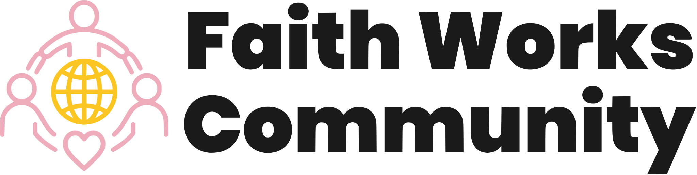
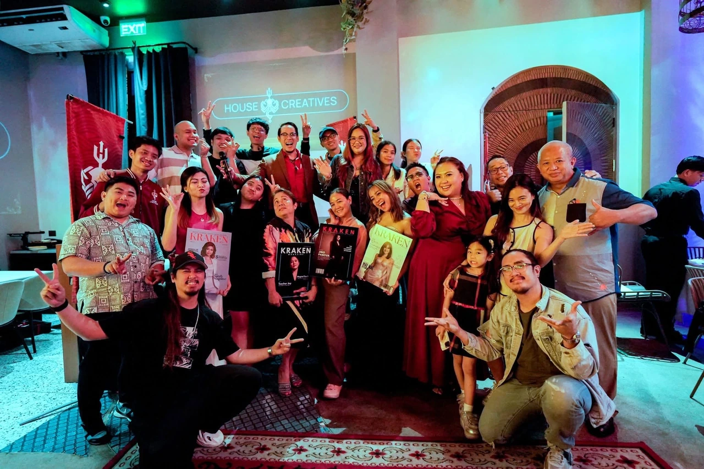

Who it’s for
- Past and future workshop participants
- Founders and professionals applying AI in their work
- Anyone who wants practical, human-first conversations about AI

The Faith Works Community brings people together to keep learning, share what they are applying, and grow with others who are on the same path.
The community is a Facebook group. Joining opens Facebook in a new tab.

Workshops and community gatherings are listed with their dates, times and venues once confirmed.